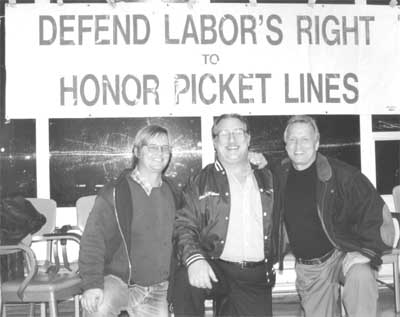

PMA Finally Drops Neptune Jade Lawsuit
By Steve Stallone - ILWU Dispatcher, November 1998
 After a year of witch hunting, PMA and individual member companies agreed to drop the Neptune Jade lawsuit in the eve of the court hearing to enforce its McCarthyite tactics.
PMA had been using the courts to try to force Robert Irminger, IBU San Francisco Region Chair and picket captain at the Neptune Jade demonstration, and other defendants, including Local 10 Executive Board member Jack Heyman, to "name names" of those who planned and participated in the demonstration. The employers planned to sue these people for hundreds of thousands of dollars in damages to cover the losses they claim they incurred because of the action.
The lawsuit arose from an action that happened in September 1997. Neptune Jade , a container ship loaded by non-union labor at a port administered by the same company that had fired the Liverpool dockers sailed into the Port of Oakland on the second anniversary of the dockers' sacking. A picket line was set up by local labor and community activists and ILWU members did not cross it for three days. The ship eventually left without being worked. It received similar receptions in Vancouver, British Columbia and at two ports in Japan.
In a ruling last March 10 Alameda County Superior Court Judge Henry Needham, Jr. tossed out the case against all defendants except Irminger on the grounds that they were exercising their First Amendment rights. Later the PMA subpoenaed all the documents the ILWU International, longshore Local 10 and clerks Local 34 possessed having anything to do with the planning and activity of the Neptune Jade picket. Locals 10 and 34 had no such documents. The International did, but all of these were in the office of The Dispatcher, the International's newspaper.
Union attorneys argued that those records were protected from subpoenas under the California Shield Law, a further clarification of the Constitutional right of freedom of the press. The law specifically states that all records journalists gather in the course of reporting the news are "shielded." Without that protection reporters would have great difficulty getting sources to reveal information, cutting off the free flow of information the First Amendment is meant to guarantee. Judge Needham agreed with the union and denied PMA access to any of the documents.
Undeterred, PMA focused on Irminger and in a deposition Sept. 3 tried to get him to name names under oath. Irminger refused, citing the Constitutional rights of free speech and freedom of association to refuse to disclose names of people participating in lawful, peaceful demonstrations. PMA responded by asking the court to compel Irminger to disclose the information or be found in contempt of court. The hearing on that motion was scheduled for Nov. 17.
Just before that date the PMA entered into serious negotiations with the ILWU on settling the case. It was hardly a coincidence that the negotiations came as ILWU International President Brian McWilliams was in India at the International Transport Workers Federation Congress where he was firming up support for the ILWU with docker unions from around the world. At the Congress the ILWU was lauded for its actions in support of the Maritime Union of Australia when its jurisdiction and existence were threatened by privatization and casualization earlier this year. In recognition of the ILWU's leading role in the international dockers' movement McWilliams was elected vice-chair of the North American dockers section, ILWU-Canada President Tom Dufresne was elected to the dockers' and seafarers' Fair Practices Committee and IBU National Secretary-Treasurer Terry Mast was elected Women's Committee Chair for North America.
McWilliams had also made clear to PMA CEO Joseph Miniace that if any member of the ILWU was going to face contempt charges for not informing on pickets in support of the Liverpool dockers, PMA would pay dearly. And the closing of the Port of Oakland July 22 during an earlier court hearing on the case showed the union wasn't bluffing.
The rest of the Coast Committee, International Vice President, Mainland Jim Spinosa and Coast Committeemen Bob McEllrath and Ray Ortiz, Jr. weighed in as well, letting Miniace know that good faith negotiations would be impossible with this lawsuit hanging over the union and community.
"This lawsuit is different from all the others, " McWilliams said. "It struck at the very soul of the ILWU, at our ability to act in solidarity with other workers around the world and in our communities. The idea that people in the community could be held liable for monetary damages alleged by multinational employers for expressing themselves around social justice issues clearly protected by their First Amendment rights should cause us great alarm. This wreaks of the same strategy that would allow the MIA, NAFTA and the Mercorsur to supercede any and all national laws in favor of the unregulated and unencumbered movement of capital under the guise of free trade agreements."
Irminger's hearing was postponed while both sides finalized the terms of the settlement. PMA agreed to drop all litigation on the matter and Heyman agreed to withdraw his potentially multi-million dollar malicious prosecution lawsuit against PMA.
"It was never about the money," Heyman said. "I just thought PMA should hurt where it counts to them and pay for harassing people over their First Amendment rights. But I decided to give it up if it gets Robert and everyone else off the hook."
At a victory celebration at Local 10 Dec. 4 Irminger finally spoke freely. "Tonight I'm going to do what PMA has been trying to make me do for a year," he laughed ironically. "I'm going to name names."
He went on to thank one by one--and by name--everyone he could recall who planned or walked the picket line.
The Neptune Jade Defense Committee is producing a video documentary on the history of the Neptune Jade struggle entitled "The World is our Picket Line: The Saga of the Neptune Jade." It will use footage from the picket line and interviews with participants, footage of the Liverpool dockers and their families as well as interviews with and music by Billy Bragg and Chumbawamba.